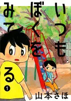
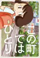
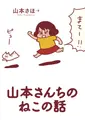
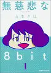
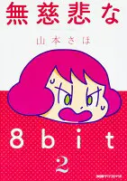

山本さほ（やまもと さほ）
いつもぼくをみてる

01この町ではひとり

01岡崎に捧ぐ
山本さんちのねこの話

01
山本さんちのねこは、トルコという名前です。トルコがどうやって山本さんちに来たのかから始まり、山本さんとの生活が描かれたまんがです
トルコはこの人に見つけてもらって良かったと思います（NNNから派遣されたのかな？）、山本家はお母さんがいい感じでやさしい人を感じさせる（子供の頃のさほ先生が怒られる描写が多いけど、奥底にあるやさしさがある）なのでさほ先生がこういう感じに育ったんだなと思います
山本家とトルコがずっと幸せでいて欲しい
無慈悲な8bit

01
02データベース
| タイトル | ISBN | 絵 | 作 | 発行 | URL | 紙 | 電子 | その他1 | その他2 |
|---|---|---|---|---|---|---|---|---|---|
| いつもぼくをみてる（1） | 9784065110997 | 山本 さほ | 講談社 | url | Y | 3019 | |||
| この町ではひとり | 9784098607273 | 山本 さほ | 小学館 | url | Y | 3688 | |||
| 岡崎に捧ぐ（1） | 9784091792075 | 山本さほ | 小学館 | url | Y | 2455 | |||
| 岡崎に捧ぐ（2） | 9784091792099 | 山本さほ | 小学館 | url | Y | 2945 | |||
| 岡崎に捧ぐ（3） | 9784091792242 | 山本さほ | 小学館 | url | Y | 3784 | |||
| 岡崎に捧ぐ（4） | 9784091792471 | 山本さほ | 小学館 | url | Y | 3940 | |||
| 岡崎に捧ぐ（5） | 9784091792624 | 山本さほ | 小学館 | url | Y | 3939 | |||
| 山本さんちのねこの話 | 9784091792273 | 山本 さほ | 小学館 | url | Y | 2141 | |||
| 無慈悲な8bit（1） | 9784047340886 | 山本さほ | KADOKAWA | url | Y | 2955 | |||
| 無慈悲な8bit（2） | 9784047345263 | 山本さほ | KADOKAWA | url | Y | 3293 |